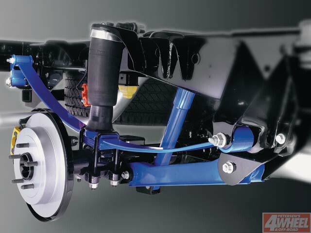
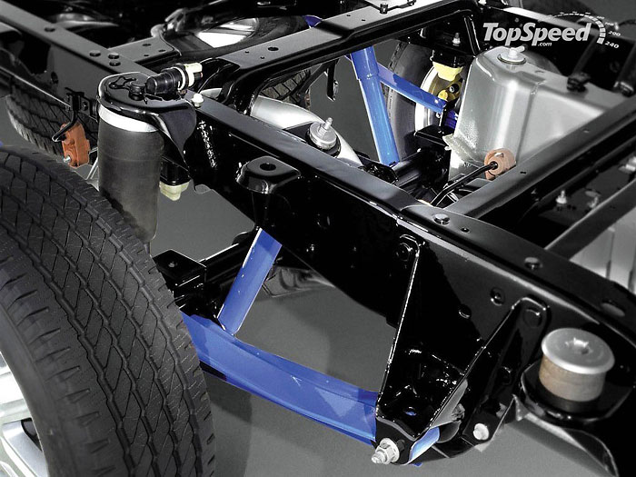

|
Blackwood Suspension |
|
Linconln Blackwood Rear Suspension Design |
|
The Blackwood uses a tapered
monoleaf, helper airbags, and "torque arm" traction bars
<<<<<<< HEAD
(called "control arms" in the service manual). h

The design strategy was to make ======= (called "control arms" in the service manual). h
The design strategy was to make >>>>>>> 0a87d2c6318913b1f3850d15f1568af011df4424 the leaf just stiff enough to support the body weight, and use the airbags with a ride height sensor to automatically maintain ride height. Truck leafs are highly progressive to account for varying loads, which leaves them stiff as hell when the truck is unloaded. The "torque" arms were used to control axle wrap (presumably needed because of the softer spring). Sporttruck.com: "The Blackwood adds staggered acceleration-sensing shocks plus a hybrid combination of monoleaf parabolic and air springs in the rear. The Blackwood's rear suspension's pressurized air springs instantly adapt to additional passengers or cargo, providing automatic load leveling, while the monoleaf rear springs reduce the harsher spring rates found in the SuperCrew's conventional leaf spring designs. Anti-windup bars further dampen any spring windup when the cargo box is unloaded creating a very sticky truck with good rear axle control." Ford-truck.com (Ford press release?): "The Lincoln Blackwood uses a combination leaf spring/air spring rear suspension that eliminates sudden shifts or spikes in spring rates, which can make the ride of vehicles with conventional leaf springs stiff or jarring, particularly when fully-loaded. The Blackwood's rear suspension design also has 10 percent less operating friction than a standard leaf spring suspension, which improves ride comfort by allowing the vehicle to respond more quickly to sudden, small pavement irregularities. On the Blackwood, a single low-rate leaf spring is used at each rear wheel. The spring is parabolic in shape if viewed from the side. That is, it is wider in the middle and thinner at the front and rear mounting points. A parabolic spring spreads loads more evenly across its surface compared with conventional leaf springs. They also are more linear, meaning that they offer more resistance in direct proportion to the load applied. In vehicles with bundled leaf springs, there can be an abrupt "knee" or kink in spring rates as each new leaf is called into service to manage increasing loads. At rest, the Blackwood's leaf springs carry the weight of the unloaded vehicle with the air springs operating at their minimum pressure. The cylindrical air springs, which are mounted atop each leaf spring, manage dynamic forces, as well as the weight of any passengers or cargo. While this is not a fully active suspension, a sensor mounted atop the axle monitors the vehicle's attitude and automatically adjusts pressure in the air springs to maintain a level ride, regardless of load in the trunk or on the tow hitch. If the system senses that additional ride height is needed, the suspension controller signals a small, quiet compressor located in the engine compartment to the right of the radiator, which adds air to the two air springs evenly. Pressure increases are virtually seamless. At the extremes of suspension travel, the air springs operate at full pressure, which helps to reduce bottoming. To manage extreme suspension inputs, the Blackwood uses micro-cellular urethane jounce bumpers to ease the axle to a stop more smoothly than natural rubber jounce bumpers. To enhance control of the rear axle, particularly during spirited acceleration or when hitting sharp-edged bumps, engineers staggered the top mounting points of the rear shocks. The top of the left shock is angled to the rear of the axle and the top of the right shock is mounted toward the front to more effectively manage longitudinal forces. Two anti-windup bars provide additional resistance to axle windup or wheel hop. The bars are mounted with relatively soft bushings, so they transmit less harshness from road irregularities." I am using the Blackwood traction bars. The front brackets weigh 4 lbs. each and the bars themselves weigh 8 lbs., for a total weight (not including axle brackets) of 24 lbs. <<<<<<< HEAD
The front brackets bolt onto the leaf hanger and frame. |